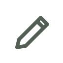
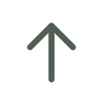
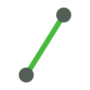
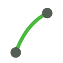
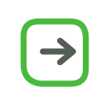

Guías



AB Line

AB + Curva
Guías guardadas
AB Line

A+
Rumbo (°)
Curva
Estado:
> OFF <
Latitud centro (±90)
Longitud centro (±180)
Latitud A (±90)
Longitud A (±180)
Rumbo (°)
A — Latitud (±90)
A — Longitud (±180)
B — Latitud (±90)
B — Longitud (±180)
Nombre de la guía
Editar nombre
Importar KML…